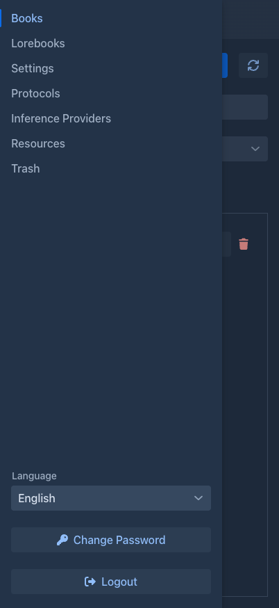
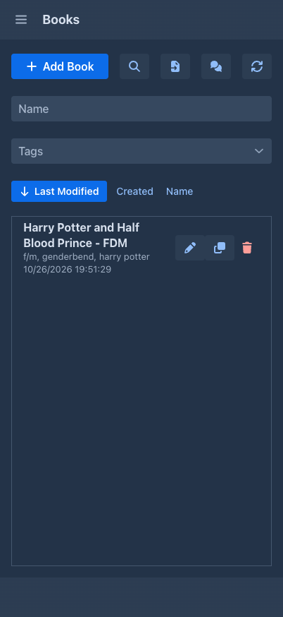
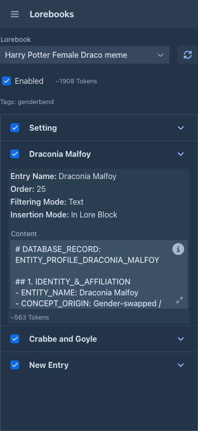
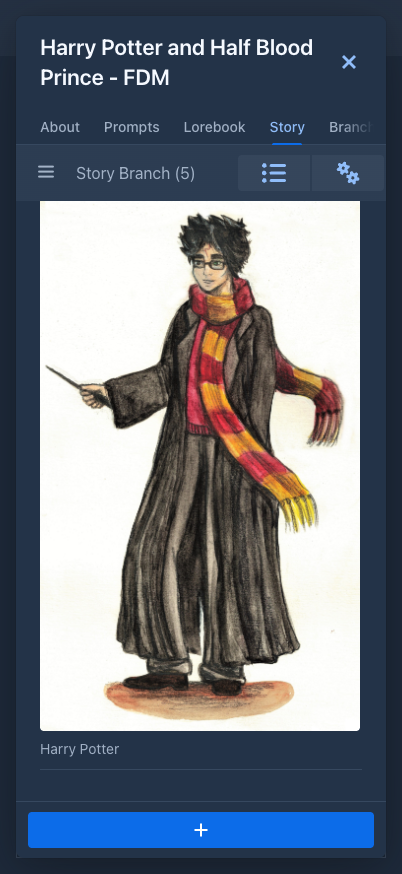

Using Marginalia on a phone
Marginalia has a layout made for phones. You write, edit and regenerate parts, read and tweak lorebooks and manage your models from the phone browser, but the phone layout is not a copy of the desktop one: it is simpler, a few things are missing and not every extension works in it. This page lists the differences.
For reading a book on a phone, there is also the viewer, which is made for it.
When the phone layout is used
Marginalia looks at the width of the browser window when the page loads. Narrower than 768 pixels gives you the phone layout, anything wider the normal workspace.
-
Tablets and phones in landscape mode are usually wider than 768 pixels and get the desktop layout.
-
The layout is not switched while you work. If you turn the phone or tablet on its side, or resize the window, the layout stays as it was until you reload the page. So to get the larger desktop layout on a tablet or a turned phone, turn it and reload; to go back to the phone layout, turn it back and reload again.
-
A narrow desktop browser window gets the phone layout too, which is handy to try it.
Like the desktop, the phone layout can be added to the home screen like an app (Install app / Add to Home Screen in the browser menu).
The workspace
The tabs on the left are replaced by a drawer. Tap the menu button in the top bar to open it, tap a tab to switch to it. The tab you are on fills the whole screen and its name is shown in the top bar.

The drawer has the same tabs as the desktop - Books, Lorebooks, Settings, Protocols, Inference Providers,
Resources and Trash - and the Language selector, Change Password and Logout at the bottom. Extensions may add buttons, but only
to the places they know on the phone, see
While the Settings tab has unsaved changes, the drawer is locked as on the desktop: save or discard first.
Books
The book list is one column. Above it are the name filter, the tag filter and the sort buttons (Last Modified, Created, Name; tap the active one again to reverse the order), then Add Book and refresh. Each book has two buttons: the pencil opens it, the trash deletes it (into the Trash).

Lorebooks
The phone shows a reduced lorebook editor. You can pick a lorebook, enable or disable it and its entries, and edit the content of an entry. Everything else is shown as text only: name, order, tags, filtering and insertion mode, negative tags and note. You cannot create, delete, import or export lorebooks, or add entries. Use the desktop for that, see Lorebooks.
The same reduced editor is used in the Lorebook tab of a book.

Settings, protocols, providers, resources, trash
-
Settings are the same as on the desktop, only laid out in a narrow column. The one thing missing is Import Backup as New Book. To bring a backup file back on the phone, create a book, use Import Backup in its Backups tab and restore it there, or import it as a new book on the desktop.
-
Protocols and Inference Providers list each entry as text with the edit and delete buttons next to it. The editing dialogs are the desktop ones.
-
Resources is the desktop tab, not adapted to the phone.
-
Trash shows each deleted object as a card (name, type, when it was deleted). The explanation of the trash is behind the i button. Restoring works as described in Trash.
The book window
Opening a book shows it full screen. The close button is the ✕ in the top corner, and the tabs - About, Prompts, Lorebook, Story, Branch view, Backups - are one row you scroll sideways. They do the same as on the desktop (see Books), with their fields in one column.
The story
The story tab is one column of parts. The differences from the story editor:

-
The outline (and the tabs extensions add next to it, such as the Author's Note) is in a drawer. Open it with the button at the top left.
-
The Summaries button and the settings menu (⚙, with Change Styles For Text and Export story) are in the top bar, not at the bottom.
-
The + button for a new part is at the bottom.
-
A part is only its text under one small line with two icons. The first is the part's menu (edit, regenerate, swipe, branch, show prompt, images, summary, delete); the second opens a popup with what the desktop shows in the column on the right of a part: the ids, model, protocol, tokens, words and the turn details.
-
The summaries overview keeps a fixed width and scrolls sideways.
What is missing
Everything not in this list works the same as on the desktop: generating, editing, regenerating, swiping and branching parts, summaries and meta summaries, book prompts, the branch tree, book backups, export, resources and the trash.
Administrators
An administrator on a phone is a normal user: there is no Admin button. The administrator tasks have to be done in the desktop layout, that is in a window wider than 768 pixels (reload the page after widening it).
Extensions
The phone layout has its own classes, so an extension has to support it explicitly. The extensions that come with Marginalia:
Extensions from other sources may behave differently or add nothing at all on the phone; they appear where their author made them work. If an extension seems to be missing, check it in the desktop layout. How an extension supports the phone is described in the developer manual.
Tips
-
Writing long text on a phone is easier in landscape mode. The layout stays the phone one after the turn, until you reload the page.
-
If you need something that is missing on the phone, turn the phone on its side and reload, or open Marginalia in a wider window; your books and settings are the same everywhere.
-
To reach Marginalia from a phone it has to run as a server: the desktop app listens on your computer only.